出伏以后，三伏期间喝的黄芪粥也要换一个粥方了。
如果您觉得黄芪粥很适合您，还想继续喝，那怎么办呢？简单来说，有几种人可以长期用黄芪来调理。
由长期的高血压、糖尿病、慢性肾炎造成的身体虚弱，那您可以经常用黄芪来补。通常要把黄芪搭配其他的材料一起来用的，这样既能进补，又起到了调理慢性病的作用。
一上楼就气喘，呼吸的时候觉得气短，一动就出汗，这样的人可以继续食用一段时间的黄芪。
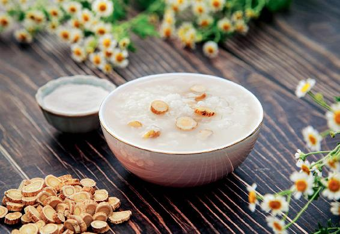
气虚型肥胖很明显的人，还可以继续用黄芪来调理。
上面说的三种人，出伏后就可以改喝黄芪水了。可以把黄芪用三煎三煮的方式煮成水，把三次的水合在一起然后代茶饮，注意煮的时间最好长一点，每次都煮40分钟，这样才能让黄芪的药性充分地析出。
对于大多数其他人来说，出伏以后可以换一个粥方了，这就是相思长生粥。
相思长生粥是我取的一个名字，因为这道粥也是和家人共度七夕节时可以一起喝的节日粥品。
有的年份三伏比较长，这道粥从末伏开始就可以喝了。
心源性猝死的高峰期一般是在每年的七八月份，因此，在处暑这样一个时节，我们要好好地来帮身体祛除湿气，同时还要补足气血。因为经过了一个漫长的三伏之后，人体内蓄积了很多的湿气、湿毒，气血消耗也非常大，所以很多人就会出现血不足的现象。
血不足在这个时节一般有三种表现：
第一，久坐或者劳累工作以后，忽然站起来会觉得眼前发黑。
第二，每天夜里两三点醒过来后，就再也难以入睡。
第三，秋乏的现象很明显。一般来说，秋乏大都出现在8月底，如果您在立秋之后就开始出现秋乏而且现象很明显，总觉得困乏无力的话，那就说明您经过三伏之后，伤血了，您的气血不足了。
如果您有这上面说的三种情况里的一种的话，就要在出伏后好好地来补一补气血了。但在这个时节还不能大补，必须一边补一边还要祛湿，这样才不会把湿气补到身体里面去，所以在这个时候喝相思长生粥，为的就是既补气血又祛湿热。而且它是适合我们每一天来喝的。
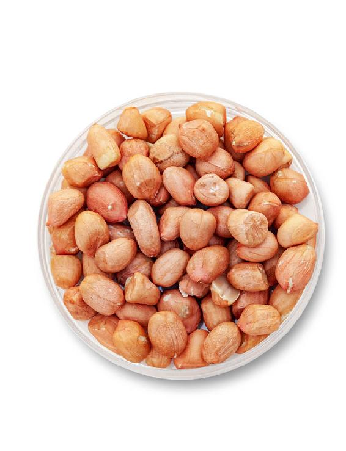
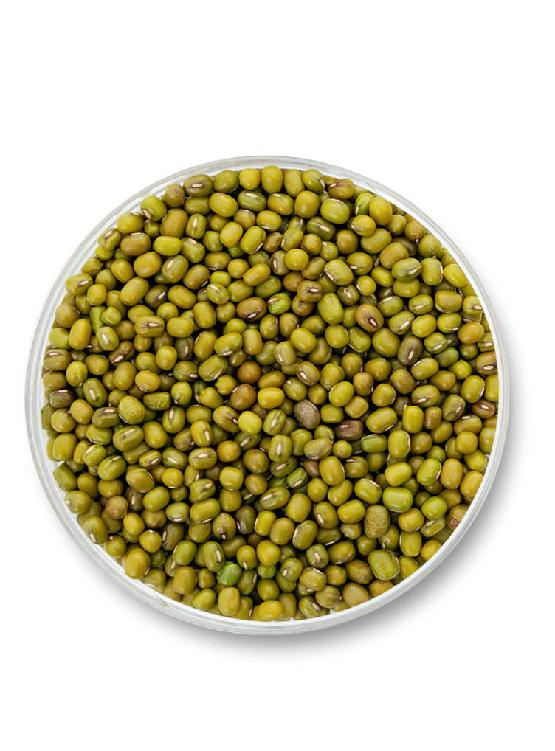
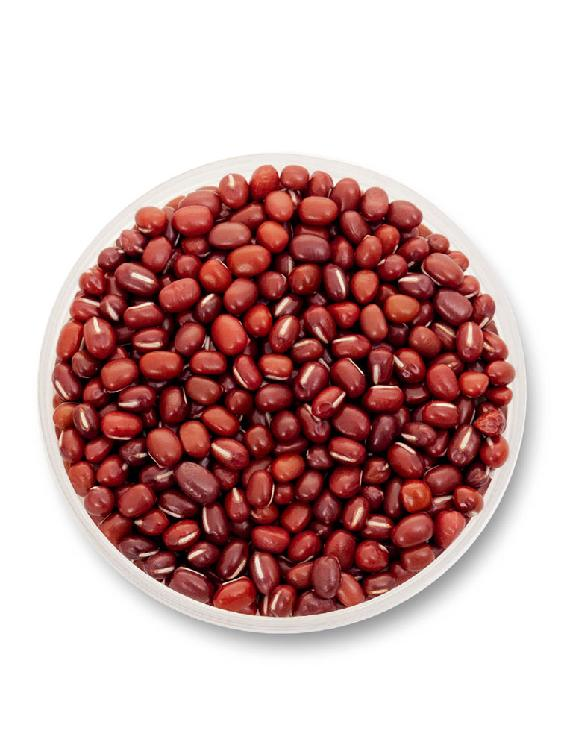
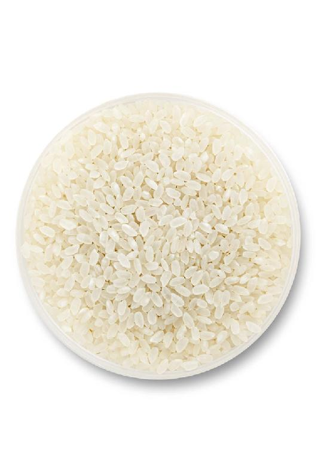
相思长生粥的基本配方：红小豆、绿豆、花生、大米各取1两（50克），这是一个家庭的量。
也可以根据家里人多或是人少，按比例来增减。
除了基础配方，您还可以加入小米和高粱。
哪一种人适合加小米呢？就是夜里总是会提早醒来的那种人。
哪一种人适合加高粱呢？就是总是湿气特别重的人，或者想多祛一祛湿气的人。
如果您是给家里的小孩子喝，可以加一点点冰糖或蜂蜜调味，孩子会觉得更好喝。
煮这道粥有一个要点：花生一定要带着红皮，不要剥去，这样补气血的效果才会更好。
这道粥煮出来颜色是很漂亮的。其中大米补气，花生补血，绿豆清热解毒，红豆祛湿气。
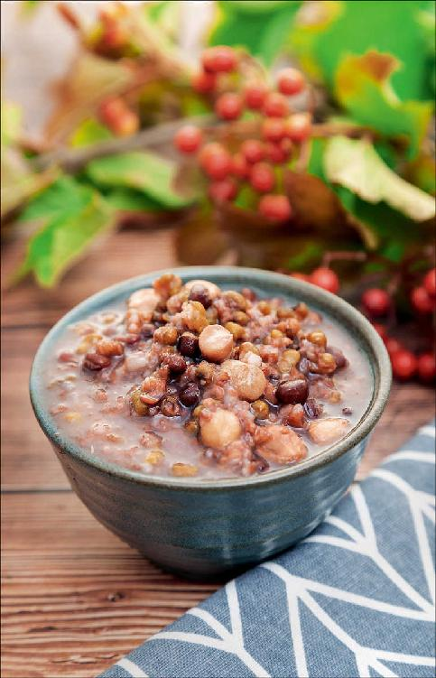
红豆是红小豆和赤小豆的俗名，它与相思红豆（“红豆生南国”说的就是相思红豆）虽然不是同一种豆，但是名字相似，我就借用来给粥方命名了。
红豆生南国，此物最相思；花生有百益，古名长生果。所以我把这个粥方命名为相思长生粥，送给不忘七夕节的有情儿女。
读者评论：相思长生粥口感好又养生
阿丹丹：相思长生粥口感好又养生，感恩遇到陈老师。
qyp：前段时间夜里总是醒，起夜后就睡不着了，觉没睡够，白天就很疲劳。喝了相思长生粥，第一晚就好转了，到第三晚，睡得可踏实了。
njty：谢谢老师的相思长生粥，这几天一直在喝，感觉口味好，而且能轻松大便。
允斌解惑：秋分后还可以继续喝相思长生粥
Xiannnnnn：秋分后还可以继续喝相思长生粥吗？
允斌：可以的。
如果您感觉自己在经过三伏之后，身体有点气血不足，特别是您发现身体出现了我之前所说的三种现象之一的血不足的话，那么相思长生粥就是您可以重点采用的食方。
在这个时节，喝相思长生粥还可以根据自己的身体状况来搭配原料。
相思长生粥用的第一个原料是红小豆。怎么样来选择红小豆呢？
如果您经常去超市的话，会发现红小豆其实是分两种的。一种是比较胖、比较圆的红饭豆，一种是比较瘦、比较细长的赤小豆。
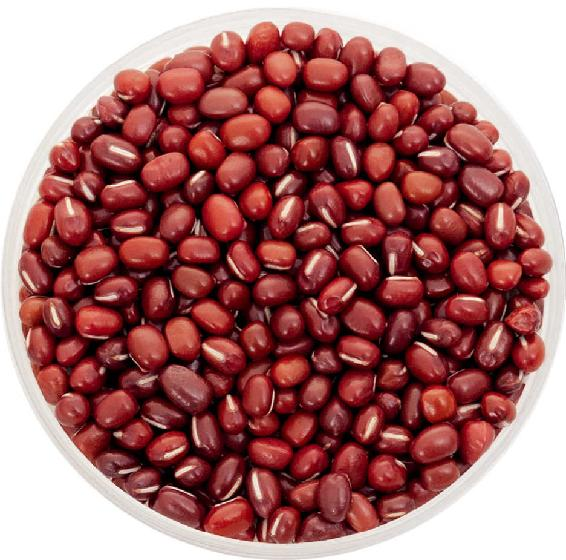
红饭豆补气血，赤小豆利水湿
红饭豆是可以被当作杂粮来吃的，而赤小豆主要是药用。
因为现在很多人都想祛湿气，所以红饭豆有时候也被当作赤小豆来卖了。要注意分辨，它们的外形是有点区别的。
如果要祛湿的话，赤小豆的效果才好。
当然红饭豆也不是没有用的，它具备杂粮的营养。赤小豆吃多了让人瘦，红饭豆就不会。
如果您是属于湿气特别重的那种朋友，那您可以在做相思长生粥的时候选择赤小豆；如果您觉得自己湿气不重，喝相思长生粥主要是想补一补气血，那您就选择红饭豆。
如果您觉得自己有点胖，想减肥，可以选择赤小豆；如果您觉得自己比较瘦，可以选择红饭豆。
这是选择两种红小豆的一个参考。
可能有的朋友既想祛湿，又想减肥，还想补气血，那怎么办呢？
可以用赤小豆。因为相思长生粥里有花生、大米在补气血了，加上赤小豆祛湿是一种很好的搭配。如果您觉得自己气血很不足，喝相思长生粥可以首先用红饭豆来补气血。赤小豆您可以留到秋冬季煮其他粥的时候再用，在秋冬放开来进补的季节，煮粥时加一点赤小豆，在补的同时又能起到一定的排毒作用。
有的朋友以为赤小豆和红饭豆是凉性的，其实不是的，它们是偏温性的，因此，食用它们是不用担心寒凉的。
不用担心相思长生粥里绿豆的寒凉
绿豆是寒凉的，但绿豆也是我们需要在这个时节来吃的。
因为绿豆既可以祛暑气，又可以祛湿热，所以在这个粥方里加一点绿豆，有赤小豆和花生跟它搭配，您是不必担心寒凉的。
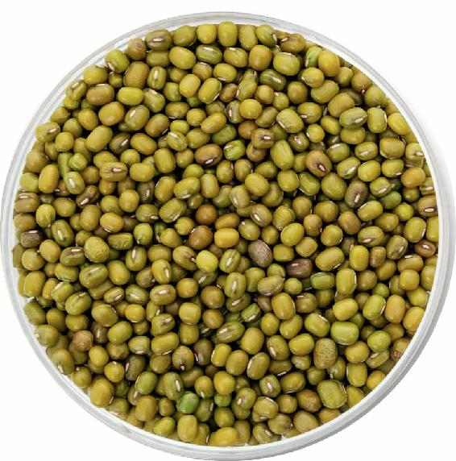
绿豆是可以清肝毒的
绿豆的好处是它可以帮助人体的肝脏系统解毒，即绿豆是可以清肝毒的，因此，在这个时节吃一点绿豆是特别好的。
哪些人不能用绿豆？
只有两种人在喝这道粥的时候，不用放绿豆。
第一种就是身体特别虚寒的人。
第二种就是在生理期的女性。
上述两种人如果喝这道粥的话请减去绿豆。
花生要带着内皮煮
煮这道粥时，注意花生一定要带着红皮来煮，这样它补血的作用才会更好。
如果您是湿气特别重的朋友，那花生少放一点就可以了；但如果您是血有点不足的朋友，那您最好多放一点花生。
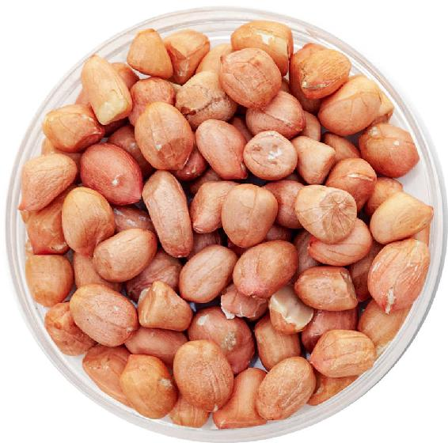
花生补血，很润
花生又名“长生果”，它的的确确是可以使人长生的一种果实，它既可以补气血又可以健脾胃，还能润肺、润肠、润肤。
总的来说，花生是一种很润的食物，适合在出伏以后的秋冬季节来吃。
花生的滋补作用为什么这么强呢？这跟它的营养价值有很大的关系，其中很重要的一点就是花生含有花生油。
我曾经打过一个比方，把花生油比作植物中的动物油。也就是说，在植物油中，它的营养是特别丰富的，因此，给小孩子炒菜时不妨多用一点花生油。
花生吃起来很香，这是因为它的含油量达到了40%。当然，也正因为花生的含油量大，我们会感觉吃不了很多花生，吃多了以后会不消化。所以烹制相思长生粥时，花生可以少放一些，起到一个补益的作用就可以了。
中老年人不妨吃一点花生芽
秋天，如果您是中老年人，我建议您可以吃花生芽。有些朋友发现花生发芽了以后，会担心有毒，就把它扔掉了。其实，我们发的绿豆芽、黄豆芽都可以吃，发的花生芽同样也可以吃。
如果花生芽是花生自己长出来的，而花生本身有可能会被黄曲霉素污染，最好就不要去吃它。
花生是一个很难长久保存的食材，它很容易被黄曲霉素污染，而黄曲霉素对人体的毒性是很大的，所以吃花生还是要吃新鲜的。
在花生上市的季节，买回来的花生如果想要保存一段时间的话，最好是买带壳的花生，用的时候再剥壳。
花生的壳对它是一个有效的保护，如果您要发花生芽来吃的话，也最好是用自己剥壳的花生，这样能确保发芽率。
花生芽的作用
发好的花生芽有什么作用呢？它跟花生不一样的地方就在于它的含油量会大大地减少。
自制花生芽
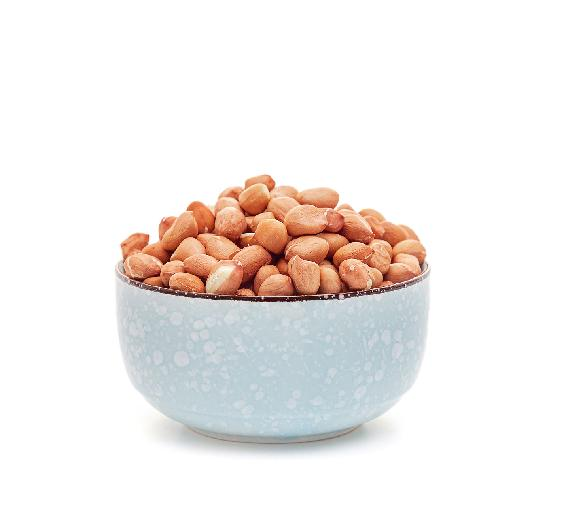
原料：花生。
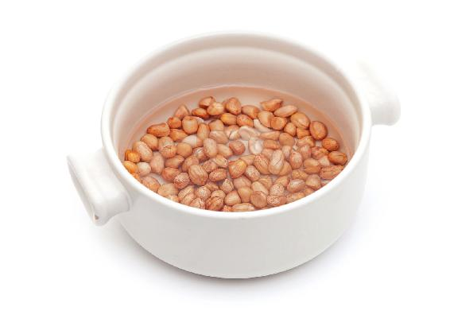
做法：
1.先把挑好的花生洗干净，用清水泡上一天。
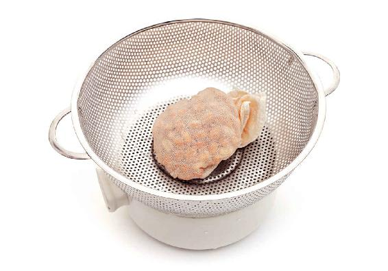
2.之后用干净的毛巾或者纱布多叠上几层，把花生包起来，放到一个有网眼的洗菜盆里面，放在避光的地方，就不用管它了。
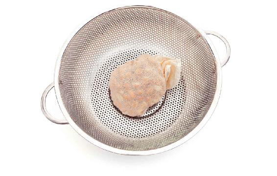
3.只需在每天早上和晚上的时候把它拿出来冲一次水，以让毛巾或者纱布保持湿润度。这样大概过上1〜3天的时间就会发出芽尖了，就可以吃了。如果想继续发长一点，就在花生芽上面压一个水盆或者重的东西，一个多星期就可以发到五厘米左右了。
允斌叮嘱：
花生芽不要发太长，太长的话味道不好。
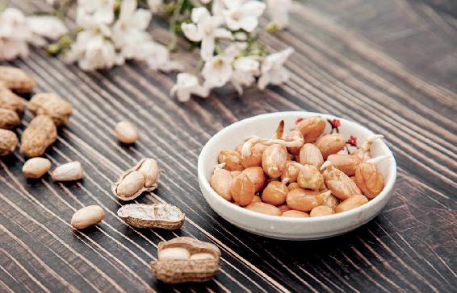
1.变得好消化了
花生在没有发芽的时候，它的含油量大概能到40%，但是发芽之后大概就只有10%了。所以对于中老年人来说，吃花生芽就不用担心吃到太多的油了，而且花生在发芽之后就会变得很好消化了，同时它滋润的作用也会增强。
2.滋润的作用增强了
每年9月份的时候，吃花生芽可以滋润皮肤、肺脏、肠道，是秋天补水的一个好食材。
总之，花生不管是直接吃，还是吃花生芽，对身体都有好处。
什么情况下可以放小米？
半夜会醒来的朋友，晚饭的时候可以喝加了小米的这道相思长生粥，有助于防止失眠。
如果您是夜里睡不着，白天容易困乏的朋友，早上喝这道粥的时候，小米不要加太多，不然的话，您白天就会更想打瞌睡，因为小米有安神的作用。
如果您觉得自己湿气很重，特别是还在咳痰，那您就不妨加一点高粱米在这道粥里面。
如果家里有老年人的话，您也可以给他加一点高粱米。高粱米对老年人的心脏系统有很好的保健作用。